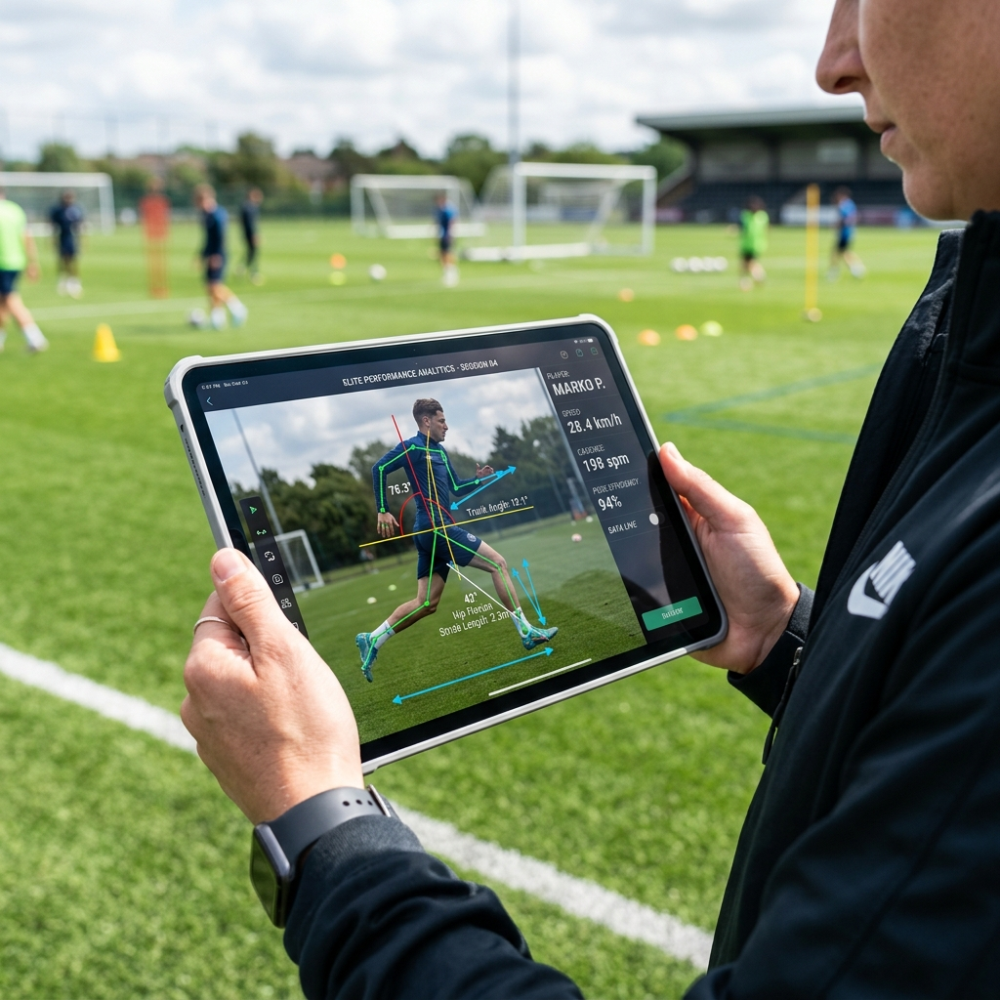

記事を読み込んでいます... 記事が見つかりませんでした URLが正しくないか、記事が削除された可能性があります。 ブログ一覧に戻る ホーム > ブログ > 記事 カテゴリ 2026/06/09 記事タイトル  まずは「足が速くなる体験」を実感してみませんか？ AWAKEでは、高精度センサーを用いた10m走測定と、動画フォーム分析を用いた体験レッスンを随時開催しています。沖縄本島全域での対面指導・オンラインレッスンに対応しています。 体験レッスンを予約する 無料測定会について見る